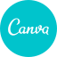
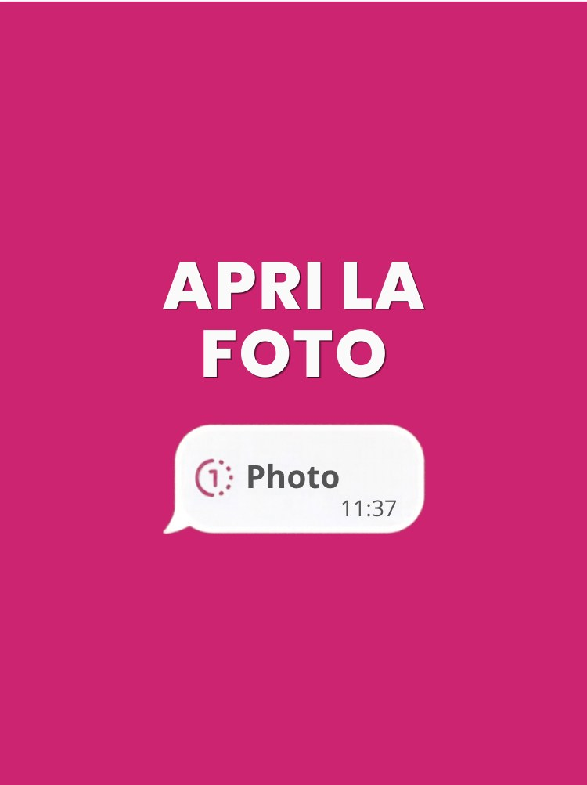
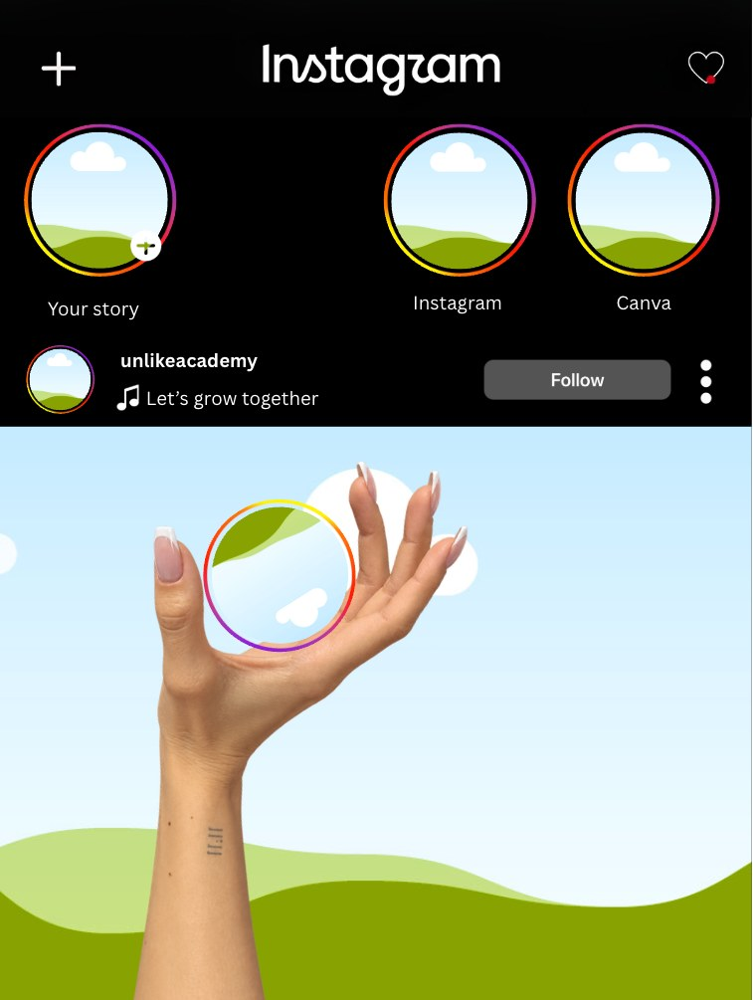

Apri la foto
La cover del trend a carosello: sembra un messaggio con una foto da aprire, e la seconda slide svela quello che vuoi mostrare
Usa il templatePost, caroselli, storie e copertine già impaginati
Clicchi sul modello, ne fai una copia tua in Canva e cambi testo e foto
Ne aggiungiamo di nuovi ogni settimana

apri · fai una copia · cambia
carosello
storiaClicca su «Usa il template» nel formato che ti serve: si apre la pagina del modello su Canva
Accedi a Canva, o registrati: è gratis
Il modello diventa una copia tua, e quello che cambi non tocca l'originale
Scrivi i tuoi testi, metti le tue foto, adatta i colori se vuoi
Poi scarichi l'immagine e pubblichi
2 template divisi per formato, e ne arrivano altri ogni settimana
Ogni pulsante apre il modello in Canva
Più slide una dopo l'altra, da far scorrere
La cover del trend a carosello: sembra un messaggio con una foto da aprire, e la seconda slide svela quello che vuoi mostrare
Usa il templateStorie e copertine delle storie in evidenza
Il look delle storie di Instagram con i cerchi: cambi le foto nei cerchi, il nome e la frase
Usa il templateStiamo aggiungendo i primi template: entra gratis nel Club e ricevi la notifica di ognuno, appena esce
Ti registri con Google, Facebook o email
Senza account vedi l'anteprima del modello, ma non puoi modificarlo
Puoi cambiare tutto senza rovinare il modello, che resta com'è per chi lo apre dopo di te
Usiamo font ed elementi gratuiti di Canva
Se in un template ne trovi uno con la coroncina, sostituiscilo con uno gratuito: il resto del template non cambia
Li puoi usare per i tuoi profili
Non vanno rivenduti né condivisi come se fossero tuoi
Quando ne esce uno nuovo lo aggiungiamo a questa pagina e lo annunciamo nel Club, nel post fisso «Template» di Social Media Tips
Il post non cambia mai: l'ultimo template è sempre in cima
Ti registri con nome, email e password e sei dentro
I piani a pagamento sono facoltativi e si annullano quando vuoi, tornando al gratuito

Hai il template, ora serve cosa scriverci dentro: Stratego costruisce con te la strategia social e il piano editoriale del mese, partendo da te
Mettiti in lista d'attesa →